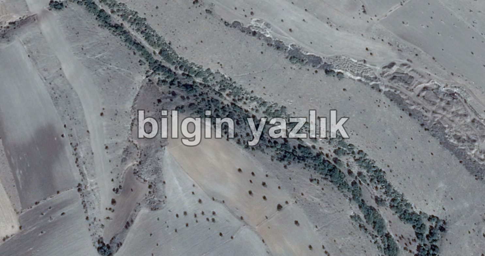

Çınarlı Vadi
Kayseri İli’nin Mimarsinan Demokrasi Mahallesi sınırları içerisinde yer alan bu vadinin bir ucu bölgedeki Toki konutlarına açılırken diğer ucu Mimarsinan OSB’nin kuzey sınırlarında yer alan parka açılmaktadır. Vadiye çınarlı vadi denmesinin nedeni oldukça açık, vadi içerisinde yüzlerce çınar ağacı bulunuyor. Vadinin içi adeta bir çınar ağacı ormanı görüntüsü veriyor. Vadi dışına çıktığınız anda kuru tarlalar ile karşılaşırken, vadi içine indiğiniz anda çınar ağacı ormanı arasında gezebiliyorsunuz. Vadide irili ufaklı mağaralar bulunuyor, bunların bazıları çok eski zamanlarda insanlar tarafından kullanılmış olabilir. Vadi içerisinden bahar aylarında eriyen kar sularını taşıyan küçük bir dere akıyor. Doğa yürüyüşü yapmak, orman havası almak ve spor yapmak için tavsiye edilecek bir vadi. Vadinin toplam uzunluğu yaklaşık 8 km.
Konum (Vadi Toki Girişi): https://www.google.com.tr/maps/place/38%C2%B045’18.8%22N+35%C2%B037’10.6%22E/@38.755231,35.617418,1010m/data=!3m2!1e3!4b1!4m5!3m4!1s0x0:0x0!8m2!3d38.755231!4d35.619612

Bu yazı taliyol arşivinden taşınmıştır. · özgün kayıt